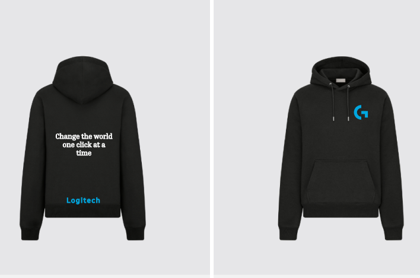

Logitech's New Hoodie
Promoting Logitech and their brand image
Logitech has always been about fresh technology and improving the lives of their consumers. Thus the importance for a hoodie that can show this about Logitech and promote to others what they stand for as a company. This means the hoodie needs to stand for not just showing their commitment to their consumers but also their commitment to the world.
Characteristics of the promotional hoodie
There are several aspects to what makes a promotional hoodie successful:
- Simple
- Limited Color
- Eye Catching Logo
- Encompasses brand values
These aspects are important because if there is too much going on with the design on the hoodie than people will shy away from it. The logo of logitech needs to stand out though or potential consumers will not associate the design with Logitech. Lastly, it needs to have a design or saying that will show Logitech's values.
Idea for the promotional hoodie
The following design works to encompass all the aspects talked about above and promote who Logitech is as a company.

This hoodie design showcases the Logitech logo on the front of the left chest so it will stand out. Since Logitech changed from their last logo it has been hard to imprint their logo to potential consumers and this can be help be fixed by making the logo be the first thing people see. On the back of the sweatshirt there is a saying: Logitech changed its logo in 2015 to the G seen on hoodie.
"Change the world one click at a time"
This phrase is simple but also showcases Logitech's most notable product, the computer mouse, and it wraps together the value that Logitech cares for making the world better as well as empowers users to feel like they can make a difference.
Then underneath the quote is Logitech's name to further tie the logo, brand, and name together into a hoodie that will stand out to others. Lastly, this design is also good because it can easily be changed to encompasses more styles. The font, logo, and sweatshirt colors can all be easily interchanged and since the design is not overly complicated it is cheaper to produce.
Summary
Logitech needs a hoodie that is simple but also can show their brand name and imprint their logo to their potential consumers and this hoodie design can do just that. It is simple, shows their values, and is easy to create more styles. This is the promotional hoodie that can really showcase Logitech's as a company and build a larger user base!